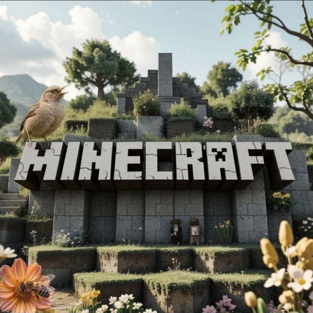

Приветствуем вас в нашем дружном чате по Minecraft.
Пользователи, заходя в чат, принимают на себя добровольные обязательства беспрекословно соблюдать нижеперечисленные правила. Незнание правил не освобождает от ответственности за их нарушения, убедительно рекомендуем с ними ознакомиться. Выдача наказания выдаётся по усмотрению администрации так же наказания могут выдаваться из принципов и норм, а так же администрация вправе принимать решение по своему усмотрению или смягчать наказания при определенных обстоятельствах. Администрация имеет полное не отвечать вам в личные сообщения, которые не несут особой причины, а так же администрация не несёт ответственности за участников чата.
▌ Правила общения в чате
Для комфортного и приятного общения всех участников просим соблюдать следующие правила:
▌ 1. Уважительное отношение
- Общение между участниками должно проходить вежливо и уважительно.
- Запрещены любые формы оскорблений, унижения, травли (буллинг), угроз жизни и здоровью других пользователей.
- Конфликты и споры разрешаются конструктивно и мирно — старайтесь избегать любых провокаций и конфликтов.
▌ 2. Создание комфортной атмосферы
- Чат предназначен для дружеского общения и обсуждения интересных тем за исключением обсуждения стороних игр.
- Пожалуйста, воздерживайтесь от агрессивного поведения, сарказма и намеренного раздражения других участников.
- Старайтесь поддерживать позитивную атмосферу в чате.
▌ 3. Забота о чистоте чата
- Избегайте бессмысленного засорения сообщений («спам», случайные символы, односложные комментарии).
- Откажитесь от постоянного написания текста заглавными буквами («капс»).
- Сообщения должны нести смысл и содержание, а не создавать шумовую нагрузку.
▌ 4. Отсутствие рекламы и ссылок
- Категорически запрещена любая коммерческая деятельность, включая продажу товаров и услуг за реальные деньги внутри чата.
- Реклама сторонних ресурсов, каналов, сервисов, чатов, продуктов также запрещены.
- Любые попытки перехода на внешние площадки или распространение ссылок вне контекста допустимого обсуждения будут расцениваться как нарушение правил.
▌ 5. Безопасность личной информации
- Не передавайте личные данные участников другим пользователям без их согласия.
▌ 6. Нейтральность и отсутствие пропаганды
- Запрещается публикация материалов, призывающих к насилию, разжиганию межнациональной розни, расизму, экстремизму и другим формам дискриминации.
- Пропаганда наркотических веществ, алкоголя, табака, материалов, не предназначенных для несовершеннолетнихстрого запрещена.
- Призывы к незаконным действиям, таким как насильственное изменение государственного строя, организация беспорядков и участие в противоправных акциях категорически неприемлемы.
- Деятельность, направленная на подрыв деятельности чата и его составляющих, его репутации, запрещена, как и проведение разборок. Если у вас есть жалобы - можно обратиться в техподдержку чата.
Соблюдение этих простых правил сделает наше общение приятным и безопасным для каждого участника!
Пиар сервера в чате запрещен. Однако есть возможность подать заявку на разрешение пиара.
Для этого заполните форму и отправьте ее в техническую поддержку.
Если реклама будет одобрена, вы сможете продвигать свой сервер в чате, но не чаще одного раза в сутки и обязательно с тегом #реклама.
При отказе в разрешении на пиар вы не имеете права рекламировать свой сервер в чате. Нарушение этого правила влечет за собой наказание.
Это правило распространяется на приглашения на серверы, созывы, любые манипуляции и набор состава на сервер, в том числе и на не готовые.
Один человек может рекламировать только один сервер.
Для серверов, которые еще находятся в процессе создания, допускается заполнение заявки с некоторыми неточностями.
Вы можете указать информацию в общих чертах и не указывать IP-адрес.
Однако по готовности сервера вам необходимо будет повторно заполнить рапорт, указав все данные корректно.
Важно учитывать: разрешение на пиар не дает привелегии отправлять в чат ссылки на сторонние сервесы как телеграмм каналы, чаты.
Однако если бот реагирует на юзерныемы, сссылки на места с важной информацией по серверу(не тгк, например: телеграф), по ситуации эти ссылки можно внести в белый список.
Рекламу можно преорести у администрации чата.
Форма рапорта:
0. Айди и ваш @юзернаем
1. Названия сервера
2. Платформа Бедрок/Джава
3. Версия
4. Айпи
5. О сервере
6. Соц.сети
7. Почему именно ваш сервер должен быть разрешён к пиару?
8. Для чего вы хотите пиарить сервер?
9. Популярен ли ваш сервер?
Если у вас остались вопросы, обратитесь в тех. поддержку
Yuri, он не являеться админом, но большой респект ему, за то что подсказывал с возникшими вопросами при кодировании сайта.